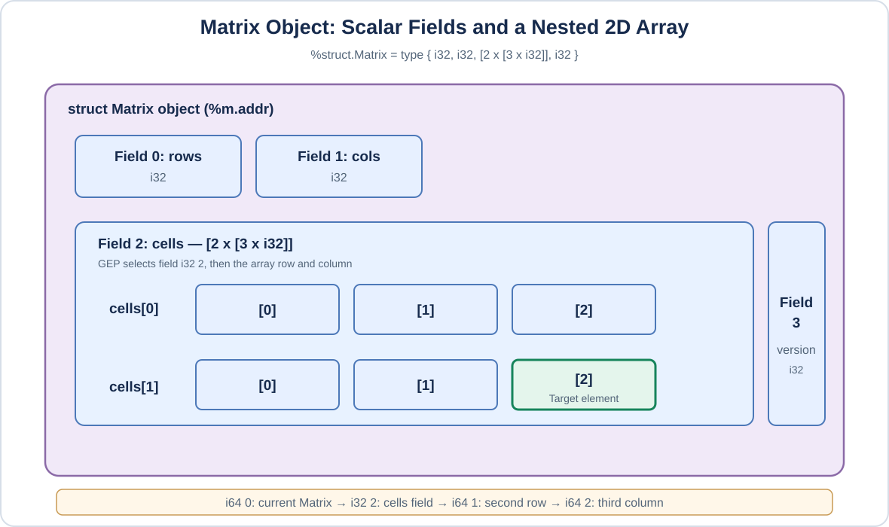
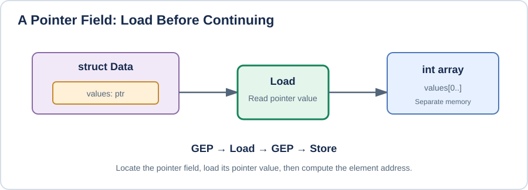
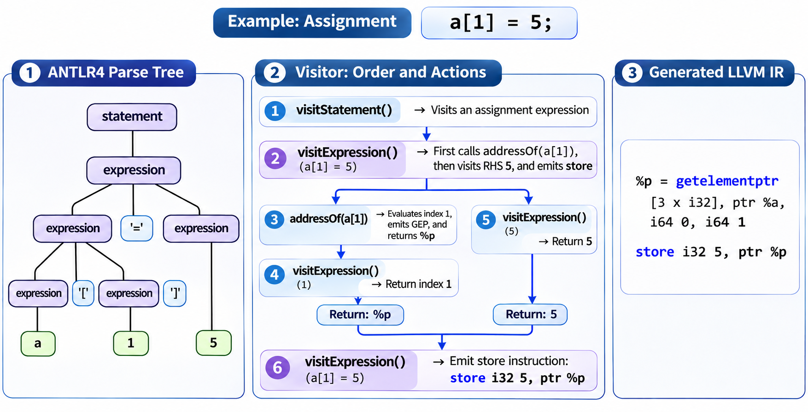
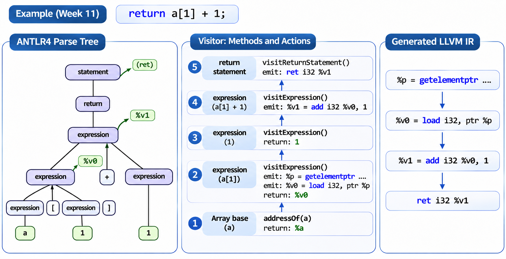

Week 11 — Address Computation and GEP¶
Last week, we learned how to allocate storage for variables in LLVM IR and how to read and write that storage. This week, we take the next step:
If a variable is an array or a structure rather than a single integer, how do we access an element or field inside it?
Instead of introducing LLVM instructions in isolation, we will work through a complete SPL program. We will first examine its object types and storage, then compute the address of an element, handle dynamic indices, and read and write the element. Finally, we will return to the compiler and see how to generate the corresponding LLVM IR.
1. Start with a Complete Program¶
Consider the following program:
struct Matrix {
int rows;
int cols;
int cells[2][3];
int version;
};
int main() {
struct Matrix m;
int i;
int j;
int value;
i = 1;
j = 2;
value = 41;
m.cells[i][j] = value + 1;
return m.cells[1][2];
}
This program uses structures, arrays, member access, array indexing, and assignment expressions, all supported by the current SPL language. Our goal is to translate it into LLVM IR.
Before translating the whole program, focus on its key statement:
This ordinary-looking statement requires the compiler to perform several distinct operations:
- Locate the storage for the local variable
m. - Locate the
cellsfield within the structure. - Use
iandjto locate the target element in the two-dimensional array. - Evaluate the right-hand expression,
value + 1. - Write the result into the target element on the left.
The new challenge this week lies in steps 2 and 3: given the address of an entire structure object, how do we find the address of an array element inside it?
1.1 How Is m Represented in LLVM IR?¶
The source program defines the structure as follows:
cells is a two-dimensional array. Its outer array has two elements, each of which is an array of three int values.
We can represent this structure type in LLVM IR as:
Here:
i32corresponds to SPL'sint.[3 x i32]is an array of threei32elements.[2 x [3 x i32]]is a two-dimensional array with two rows of threei32elements each.%struct.Matrixnames the structure type containing these four fields.
Structure fields are numbered from 0 in declaration order:
| Source field | LLVM type | Field index |
|---|---|---|
rows |
i32 |
0 |
cols |
i32 |
1 |
cells |
[2 x [3 x i32]] |
2 |
version |
i32 |
3 |
Although cells is a two-dimensional array, it is still a single structure field, with field index 2. We select this field first, then apply row and column indices within the array. The surrounding fields, rows, cols, and version, make the numbering clear: an array field occupies one field index, regardless of how many elements it contains.
The object m therefore has type %struct.Matrix. We allocate its storage with:
This is the same kind of operation as the alloca i32 instruction from Week 10. This time, however, it allocates an entire structure rather than a single integer.
%m.addr holds the address of the whole m object. It is neither the address of m.cells[1][2] nor the integer stored in that element.
The following diagram shows the components of m:

We now know the object's type and have its starting address. The central question is: how do we get from %m.addr to m.cells[1][2]?
2. Find an Element Within an Object¶
To focus on address computation, temporarily replace the dynamic indices i and j with constants:
The object's type stays the same. Using constants simply lets us set aside the question of where the index values come from.
2.1 Follow the Object's Type to the Target¶
Starting from %m.addr, accessing m.cells[1][2] follows a path through the object's nested components:
%m.addr
|
v
struct Matrix object
|
| Select field cells (field index 2)
v
[2 x [3 x i32]]
|
| Select row at index 1
v
[3 x i32]
|
| Select column at index 2
v
i32 element
Array indices start at 0, so:
cells[1]is the second row.cells[1][2]is the third element in the second row.
We can split this path into three address computations. First, find the cells field within the structure:
Next, find the second row within the two-dimensional array:
Finally, find the third element within that row:
These three steps take us:
- From the structure object to its
cellsfield. - From the two-dimensional array to its second row.
- From that row to its third element.
We now have the address of m.cells[1][2]. The result is still an address; we have not read the integer stored there.
2.2 Why Can One GEP Express the Whole Path?¶
We split the computation into three steps to make the access path easier to follow. Each step, however, only selects a subobject within a known structure or array layout. None requires reading another value from memory.
We can therefore combine them into a single getelementptr instruction, usually abbreviated as GEP:
This computes the same address as the three separate GEP instructions. Starting from %m.addr, it follows the path described by the type and indices to the target element.
That is GEP's central purpose:
GEP computes the address of a subobject from an existing base address, an object type, and a sequence of indices.
It does not read or write the contents at that address.
2.3 Understanding GEP's Type and Indices¶
The basic form of GEP is:
Return to our instruction:
Each part has a specific role:
| Part | Meaning in this example |
|---|---|
%struct.Matrix |
The source element type: tells LLVM which object type to start from. |
ptr %m.addr |
The base address: the start of the whole m object. |
First index, i64 0 |
Advance by zero whole %struct.Matrix objects from the base address. |
Second index, i32 2 |
Select the structure's third field, cells. |
Third index, i64 1 |
Select the second row of the two-dimensional array. |
Fourth index, i64 2 |
Select the third element of that row. |
%element.addr |
The resulting element address. |
The first two indices can be confusing because they serve different purposes:
- The first index,
i64 0, steps through objects of type%struct.Matrixfrom the base address. Advancing by zero whole objects keeps us at the currentm. - The second index,
i32 2, selects a field within that structure: its third field,cells. - The remaining indices,
i64 1andi64 2, select the row and column within the two-dimensional array.
The Matrix diagram above shows how these indices lead through the structure field, array row, and array column.
The first index does not always have to be 0. If the base address points to a sequence of contiguous structure objects, a first index of 1 advances to the next structure. Here, we want the current m, so we use 0.
A structure field index is a field number, not a byte offset. The i32 2 selects the third field, cells; LLVM computes its actual byte offset from the structure type and the target's data layout. Even when a structure contains padding, we do not need to calculate the byte offset ourselves.
Notice that this GEP uses both i64 and i32:
- On common 64-bit targets, the first index and array indices are often written as
i64, since they participate in address arithmetic. - Structure field indices follow a special rule: they must be constant integers of type
i32. That is why selectingcellsusesi32 2.
The mixture in i64 0, i32 2, i64 1, i64 2 is therefore deliberate. These indices represent object stepping, field selection, row selection, and column selection, respectively. The target's data layout determines the pointer index width; our examples use a typical 64-bit target.
2.4 Why Specify %struct.Matrix When GEP Already Has ptr?¶
In modern LLVM IR, pointers are generally written as:
Older LLVM IR used typed pointers such as:
Modern LLVM uses opaque pointers. The type ptr represents an address without encoding the type of the object it points to.
How, then, does LLVM know which layout to use for address computation? GEP supplies that information through its first type argument:
Here, %struct.Matrix is the source element type. It specifies the object type from which this address computation begins.
Likewise, a memory read explicitly states the type of value to read:
Keep these roles distinct:
ptrrepresents an address.- GEP's source element type supplies the object layout used for address computation.
- The type on
loadspecifies the value to read from memory.
3. Return to the Program: Dynamic Indices, Reads, and Writes¶
We can now compute the address of m.cells[1][2] using constant indices. Return to the original statement:
Here, i and j are variables rather than constants written directly in the access expression. The address computation follows the same path, but the row and column indices must be obtained at runtime.
3.1 Where Do Dynamic Index Values Come From?¶
In our program, i and j are ordinary local variables. Following Week 10's approach, we allocate storage and initialize them:
GEP needs the index values, whereas %i.addr and %j.addr are the variables' storage addresses. We must first read their values:
Now %i.value and %j.value are integer values we can use in address computation.
Our examples use i64 array indices for a 64-bit target. We therefore extend the loaded i32 indices to i64:
Then we use them as GEP's array indices:
sext performs sign extension: it extends an i32 integer to i64 while preserving its signed value. We extend the array indices i and j; the structure field index remains i32 2.
GEP does not require every index to be constant. Array indices can be integer values computed at runtime. Their interpretation follows the target's pointer indexing rules, and different targets may use different pointer index widths.
3.2 Once We Have the Destination Address, How Do We Assign to It?¶
We have computed the address of the left-hand element, m.cells[i][j]:
But the source statement asks us to perform an assignment:
GEP has located the destination; it has not written anything there. We still need to evaluate value + 1.
The variable value holds its integer in memory, so we first read it and then perform the addition:
Finally, we write the result to the destination address:
Putting these operations together:
Left side, m.cells[i][j]: compute the destination address
Right side, value + 1: read value and compute the sum
Finally: write the sum to the destination address
This reveals a useful distinction: depending on the context, an expression may need to provide an address or a value.
The left side of assignment must identify where to write, so the compiler generates an address. Addition needs integer values, so the compiler reads the variable's contents. GEP, load, and store provide the operations needed for these tasks.
3.3 What If We Want to Read the Element?¶
The program's final statement is:
Here, we need the integer currently stored in the element as the function's return value.
The address computation is exactly the same as before:
After computing the address, we read the value with load:
The distinction between reading and writing comes after GEP:
- The same access path can use the same address computation.
- To modify the element, use
store. - To obtain the value stored in the element, use
load.
4. GEP's Limits: When Must We Load First?¶
So far, every access in our running example follows the nested structure and array layout directly. This works because cells is an array embedded in Matrix: it is part of the structure object itself, and LLVM can determine its location from the type.
Let us change one detail and see what happens. Recall our original structure:
The array object cells is contained directly within Matrix. To compare an embedded array with an indirectly referenced object, consider this C structure:
Here, values is a pointer field. The structure stores an address that points to a separate region of memory.
The following example uses C pointer syntax to illustrate indirection in LLVM. This syntax is outside the current SPL language.
Assume %p is already a pointer value referring to a struct Data object. To access p->values[i], we first locate the values field itself:
%values.addr is the storage address of the pointer field. It is not the address of the array that values points to.
We must use load to obtain the pointer value stored in that field:
Now %values.ptr is the pointer to the integer array. Assume %i is an already computed i32 index value. For our 64-bit target, we first extend it to i64, then compute the element address using %values.ptr as the new base:
To write 100 into that element, we finish with:
The complete sequence is:

How does this differ from m.cells[i][j]?
| Running example: an embedded array | C extension: a pointer field |
|---|---|
cells is part of the structure object. |
values stores a pointer value. |
| The structure type directly describes the array layout. | The pointed-to object is outside the structure's nested layout. |
| GEP can follow the layout all the way to the element. | GEP locates the pointer field, then load reads its pointer value. |
| Further indexing follows the original object's type path. | The next GEP uses the loaded pointer as a new base address. |
The question to ask is therefore not how many subscripts or member accesses appear in the source, but:
Do we already have the base address needed for the next address computation? If that address is a pointer value stored in memory, we must load it first.
This is GEP's limit: it computes a new address from an existing address and a type layout, but it does not read pointers from memory for us.
5. Back to the Compiler: Generating LLVM IR¶
Return once more to our assignment:
We now know which LLVM IR operations it requires. For the IR generator, the key is to distinguish two tasks:
- Generate the address of an object.
- Generate the value of an expression.
We can describe these tasks with two interfaces:
For example:
- For the identifier
m,emitAddress(m)retrieves the variable's storage address from the symbol table. - For member access
m.cells, first obtain the address ofm, then use its structure type information to find the field index ofcellsand generate a GEP. - For array access
m.cells[i], first obtain the array object's address, then evaluate the indexiand generate a GEP. - When the integer value of the ordinary variable
valueis needed, obtain its address and generate aload.
Assignment can therefore be summarized as:
These function names are illustrative. The important design choice is to separate the responsibilities: the left side supplies a location, and the right side supplies a value.
5.1 The Complete Translation¶
We can now assemble the pieces developed above. First, define the structure type:
The complete LLVM IR is:
%struct.Matrix = type { i32, i32, [2 x [3 x i32]], i32 }
define i32 @main() {
entry:
; Allocate local objects
%m.addr = alloca %struct.Matrix
%i.addr = alloca i32
%j.addr = alloca i32
%value.addr = alloca i32
; Initialize scalar variables
store i32 1, ptr %i.addr
store i32 2, ptr %j.addr
store i32 41, ptr %value.addr
; Read the dynamic indices
%i.value = load i32, ptr %i.addr
%j.value = load i32, ptr %j.addr
%i.index = sext i32 %i.value to i64
%j.index = sext i32 %j.value to i64
; Calculate the address of m.cells[i][j]
%element.addr = getelementptr %struct.Matrix, ptr %m.addr,
i64 0, i32 2, i64 %i.index, i64 %j.index
; Evaluate value + 1
%value.value = load i32, ptr %value.addr
%sum = add i32 %value.value, 1
; Store the result into m.cells[i][j]
store i32 %sum, ptr %element.addr
; Calculate the address of m.cells[1][2]
%result.addr = getelementptr %struct.Matrix, ptr %m.addr,
i64 0, i32 2, i64 1, i64 2
; Read the element and return it
%result = load i32, ptr %result.addr
ret i32 %result
}
With i = 1, j = 2, and value = 41, the assignment writes 42 into m.cells[1][2]. The program then reads that element and returns 42.
Looking back over the translation:
allocaallocates storage for the local variables and the entire structure object.loadreads the dynamic indices and scalar variable values.- GEP computes the target element's address from the structure and array layouts.
addevaluates the right-hand expression.storewrites the result to the destination address.- The return expression uses GEP again to obtain the element address, then
loadto read its value.
Throughout, we have been solving the same problem: starting from an existing object, how do we locate an element inside it and correctly read or modify that element?
5.2 Exercises¶
These exercises apply the address computation rules from this lab without introducing new language features.
Exercise 1: Access a Different Element
struct Matrix {
int rows;
int cols;
int cells[2][3];
int version;
};
struct Matrix m;
m.cells[0][1] = 7;
Write the GEP that computes the address of m.cells[0][1] and explain each index.
Exercise 2: Dynamic Indices
struct Matrix {
int rows;
int cols;
int cells[2][3];
int version;
};
struct Matrix m;
int i;
int j;
m.cells[i][j] = 7;
Explain why the values of i and j must be obtained before they can be used as GEP indices.
Exercise 3: Read an Element
Write the corresponding GEP and load instructions, and explain why no store is needed.
Exercise 4: C Extension — A Pointer Field
Assume %p is already a pointer value referring to a struct Data object. Write the GEP, load, and second GEP needed to access p->values[i], and explain why the intermediate load is necessary.
6. Practice: Generate LLVM IR with an ANTLR4 Visitor¶
In previous projects, we used ANTLR4 visitors to traverse a parse tree. During semantic analysis, visiting a syntax node might involve checking whether a variable is declared, determining an expression's type, or adding a symbol to the symbol table.
We will use the same visitor mechanism for code generation. What changes is the work performed when each node is visited.
Our goal is now to translate SPL into LLVM IR. A straightforward implementation uses a StringBuilder to accumulate the generated IR:
As the visitor traverses the parse tree, it generates the LLVM IR instructions required by each construct and appends them to the StringBuilder.
For integer addition, we generate add; for a variable declaration, we may need alloca; for assignment, we generate store; and for a return statement, we generate ret.
LLVM IR takes shape as the traversal proceeds:
Visit a syntax node
↓
Generate LLVM IR for the node's semantics
↓
Append instructions to the StringBuilder
↓
Continue visiting subsequent nodes
↓
Obtain the complete LLVM IR
Translating the program step by step does not mean that each SPL statement corresponds to exactly one LLVM instruction. A single statement may require several instructions. For a compound expression, we usually translate its subexpressions recursively before emitting the instruction for the enclosing expression.
The overall approach is familiar: during semantic analysis, the visitor checked the program and maintained semantic information; during code generation, it incrementally generates and accumulates target code.
Let us use a small SPL program to see how individual syntax nodes generate LLVM IR.
6.1 From Syntax Nodes to LLVM IR¶
Consider this program:
We want to generate:
define i32 @main() {
entry:
%a = alloca [3 x i32]
%p0 = getelementptr [3 x i32], ptr %a, i64 0, i64 1
store i32 5, ptr %p0
%p1 = getelementptr [3 x i32], ptr %a, i64 0, i64 1
%t0 = load i32, ptr %p1
%t1 = add i32 %t0, 1
ret i32 %t1
}
Pay attention to this year's SPL grammar: assignment, array indexing, and addition are all alternatives of expression. They therefore enter the same visitExpression() method. ANTLR4 does not generate separate visitAssign(), visitAdd(), and visitArrayAccess() methods for them in this grammar. The visitor traverses the parse tree generated by ANTLR4.
6.2 An Array Element on the Left: Compute Its Address, Then Store¶

How to read the diagram: start at the assignment expression. Obtain the address %p0 for the left side, a[1], visit the right-hand constant 5 to obtain the string "5", and finally append a store instruction. The diagram is a schematic view of the key subtrees, with some details collapsed. The Java code below gives the precise teaching logic. Temporary names in the diagrams are illustrative; the code uses counters to generate them.
For a[1] = 5, we cannot simply use the usual visit(ctx.expression(0)) to obtain the left operand. Ordinary expression evaluation generally produces a value, whereas the left side of assignment needs an address.
We therefore introduce a small helper, addressOf(), whose only job is to compute the address of an identifier or array element:
private String addressOf(SplcParser.ExpressionContext ctx) {
if (ctx.LBRACK() != null) { // expression '[' expression ']'
String base = addressOf(ctx.expression(0));
String index = visit(ctx.expression(1));
String ptr = "%p" + pointerCounter++;
ir.append(" ").append(ptr)
.append(" = getelementptr [3 x i32], ptr ")
.append(base).append(", i64 0, i64 ")
.append(index).append("\n");
return ptr;
}
if (ctx.Identifier() != null && ctx.expression().isEmpty()) {
return variables.get(ctx.Identifier().getText());
}
throw new UnsupportedOperationException("Not an addressable expression");
}
The type [3 x i32] and the two GEP indices are specific to this example. A general compiler must determine the source element type and index path from the variable's type. Here, variables is a mapping maintained by the code generator from source variable names to LLVM addresses, such as a → %a.
The assignment branch of visitExpression() is:
if (ctx.ASSIGN() != null) {
String address = addressOf(ctx.expression(0));
String value = visit(ctx.expression(1));
ir.append(" store i32 ").append(value)
.append(", ptr ").append(address).append("\n");
return value; // The assignment expression yields the RHS value.
}
Visiting the constant 5 returns "5" without generating an instruction. Together, these steps produce:
6.3 An Array Element Used as a Value: Compute Its Address, Load, Then Add¶

The return expression a[1] + 1 also accesses a[1]. This time, addition needs the integer stored in the element. We first call addressOf() to generate a GEP, then use load to obtain the value.
In visitExpression():
// expression '[' expression ']' used as an ordinary rvalue
if (ctx.LBRACK() != null) {
String address = addressOf(ctx);
String result = "%t" + tempCounter++;
ir.append(" ").append(result)
.append(" = load i32, ptr ").append(address)
.append("\n");
return result;
}
Addition recursively visits its left and right subexpressions:
if (ctx.PLUS() != null && ctx.expression().size() == 2) {
String left = visit(ctx.expression(0));
String right = visit(ctx.expression(1));
String result = "%t" + tempCounter++;
ir.append(" ").append(result)
.append(" = add i32 ").append(left)
.append(", ").append(right).append("\n");
return result;
}
Finally, visitReturnStatement() visits the return expression before generating ret:
@Override
public String visitReturnStatement(SplcParser.ReturnStatementContext ctx) {
String result = visit(ctx.expression());
ir.append(" ret i32 ").append(result).append("\n");
return null;
}
This produces the sequence getelementptr → load → add → ret. Names such as %p0, %p1, %t0, and %t1 come from incrementing counters; the operands and temporary results are not hardcoded into the output strings.
Scope of this simplified example: only the key visitor branches are shown. The visitor code for function headers, function bodies, and array declarations is omitted. The numeric-constant branch of
visitExpression()simply returnsctx.Number().getText(). For simplicity, this example uses a fixed one-dimensional array of three integers. Supporting arrays and structures in general also requires type information, general address computation, scope management, and related machinery.
6.4 From StringBuilder to a Builder Abstraction¶
Appending strings directly makes the generation process easy to see. A compiler can also wrap these operations in a builder. In the exercise framework provided by the instructor, methods such as builder.add(left, right) and builder.load(addr, name) provide this abstraction. The visitor decides which operations a node requires; the builder handles how the instructions are represented and emitted.
Lab 11 Framework (lab11 branch)
The framework uses its own simplified SPL grammar, supporting scalar int variables and other basic constructs. It does not support the array and GEP examples above. It is intended for the small exercise in the next section.
6.5 In-Class Exercise: The Simplified Framework¶
Using the instructor's starter code, complete the designated TODOs in LLVMVisitor.java. The framework supplies the supporting logic; you are not expected to implement a compiler from scratch.
The program should return 6. As an optional follow-up, consider which generated instructions would change if you replaced a = a + 1 with a = a + 3.
Further Reading¶
Official LLVM Documentation
- The LLVM Language Reference — getelementptr instruction: the formal syntax and semantics of GEP.
- The Often Misunderstood GEP Instruction: explanations of GEP's first index, structure field access, and pointer indirection.
- Opaque Pointers: the design of
ptrin modern LLVM.
Additional Note: inbounds and Array Bounds
inbounds does not perform runtime array bounds checking. It gives LLVM guarantees about the address computation that it can use for optimization. If the computation violates the relevant constraints, the GEP result may become a poison value.
For now, focus on the address computation rules of ordinary GEP. Do not interpret inbounds as automatically inserting a bounds check.